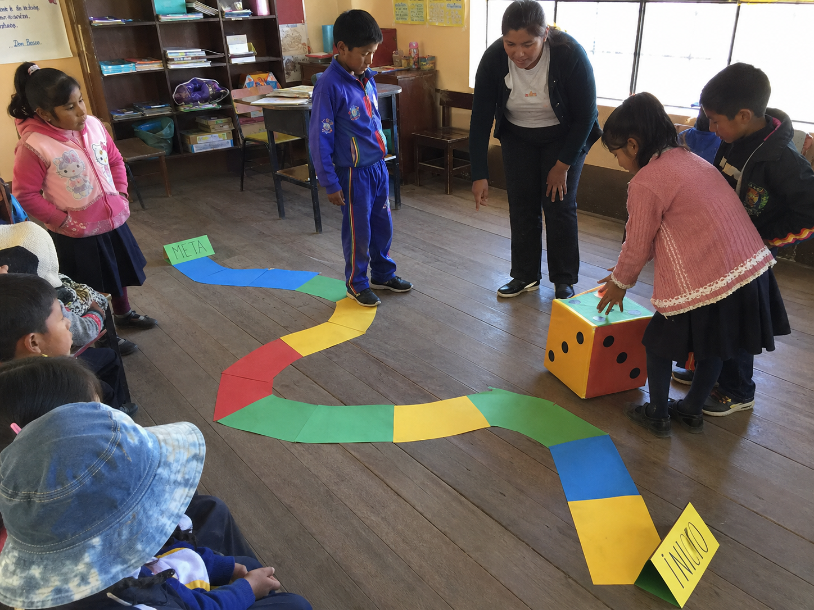

Niñas y niños somos igualmente capaces
Descubrimos que niñas y niños pueden realizar las mismas actividades y asumir responsabilidades por igual.

Recorre el camino, lanza el dado y conversa sobre quién puede realizar distintas tareas.
¿Qué preparo?
Dado, recorrido y tarjetas
¿Cómo se realiza?
Ver paso a paso